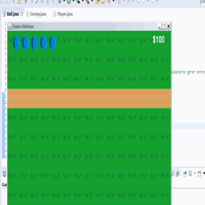

Projetos
Este foi um dos projetos que desenvolvi, afins escolares, onde o projeto está relacionado a organização da vida e a membrana plasmática.
Este aplicativo, foi desenvolvido para o Android, de maneira que a proposta seria empregar uma maneira dinâmica de apresentar os temas já citados, e também possuir um banco de dados, diante o emprego de interdisciplinaridade com o Banco de Dados e Biologia.
Esse foi um site elaborado para celebrar o famoso educador Paulo Freire, que influenciou muito na educação contemporânea. É importante ressaltar, que este foi o primeiro site que fiz para compreender os requisitos da minha unidade.
No GIF ao lado, é possível evidenciar o site do qual participei na produção. Neste foi estabelecido um tema voltado a reciclagem, em virtude ao desenvolvimento sustentável, e após a decisão da orientadora, foi definido como nosso tema a “EcoBike".
Em virtude a linguagem C++, eu desenvolvi um jogo com uso desta linguagem.
O jogo foi desenvolvido no formato de texto e possui um enredo simples, basicamente, o usuário deve apertar (1,2,3 ou 4) para o personagem realizar alguma ação.
Depois de inúmeros trabalhos que requisitava a competência com a formatação no Word. Eu me acarretei o cargo para cuidar da formatação, para que assim eu pudesse aprender como funciona o programa, e para dificultar eu tive o primeiro contato com o uso das Normas ABNT. Portanto, hoje eu tenho uma maior afinidade na formatação de documentos, graças a esta experiencia. Com isso ao lado, é possível evidenciar um dos trabalhos que fiz com o uso do Word e as Normas ABNT.
Diante a questão de apresentações, eu me identifico com apresentações dinâmicas, onde eu me expresso mais do que introduzo informações, para que seja de fácil compreensão, tanto para mim quanto para os que me assistem. Com isso, ao lado é possível evidenciar uma apresentação que fiz, para uma apresentação de inglês, cujo cenário foi elaborado de maneira humorística.
Este foi um questionário, que fiz com uso da plataforma Scratch, onde o tema do questionário seria, tratar informações sobre o educador Paulo Freire. Em contrapartida, este projeto foi desenvolvido a fim de uma disputa entre salas, diante uma atividade introduzida pelos professores, para celebrar o dia do Paulo Freire.
Ao lado é possível evidenciar um gif, que retrata uma das animações que fiz. Onde está foi desenvolvida para um projeto de propaganda, a fim de introduzir um trailer sobre um sistema operacional. Mesmo que a animação aparenta ser simples, ela possui 53 imagens.
Em virtude a projetos grandes, ao lado é possível evidenciar um aplicativo que estou desenvolvendo. O aplicativo retrata um tema importante para a saúde dos trabalhadores sedentários, a Ginástica Elaboral, portanto o aplicativo irá proporcionar uma série de exercícios específicos, dependendo de qual das Ginasticas você escolher (Relaxamento, Compensatória, Preparatória, De Compensação).
Esse é um rascunho do jogo imenso, que pretendo desenvolver. Seu nome é “Under Control”, ele irá retratar o cotidiano de um jovem que possui esquizofrenia. Em virtude ao enredo, basicamente, seria um jogo de ação da qual o usuário deve tentar desvendar o passado do protagonista, e enfrentar diversas pessoas com doenças psicológicas, que sofreram mutação, devido aos estudos científicos que deram errado. Em específico, a moral que será trabalhada neste jogo, seria a maioria de nós, os humanos, estamos sendo controlados por nosso inconsistente cegamente, dentre outras mensagens.
Como é possível evidenciar ao lado, estas são as artes que desenvolvi para os meus demais projetos. Esta arte é denominada de Pixel Art, a arte que eu tanto admiro, e que no futuro pretendo me profissionalizar nela.
Em virtude a programação Java, esse foi um projeto que desenvolvi no Eclipse, a fim de estudar a programação de jogos. O jogo que produzi foi um clone de Flappy Bird, um jogo famoso, onde em seu enredo, retrata um pássaro que deve conquistar pontos, atravessando por obstáculos do qual não pode encostar. Na versão que fiz, eu introduzi a dificuldade, ou seja, conforme você vai conquistando pontos, maiores são os obstáculos, e mais rápido o pássaro percorre a trajetória.
Retomando a programação em Java, eu produzi um jogo de Ping Pong, novamente no Eclipse. Este jogo é um clone da versão criada em 1972, um dos primeiros jogos mais lucrativos no mercado da época. Em virtude a isso, o jogo retrata um jogo de Ping Pong como no mundo real, a única diferença, foi que introduzi um aumento na velocidade da bola conforme ela vai rebatendo.
Pac-Man é um jogo clássico do qual muitos já jogaram, e a avaliação do jogo foi uma das melhores. Diante disso, eu queria testar meu conhecimento, ou seja, tentei fazer um jogo parecido, e o resultado é possível ser evidenciado ao lado. As diferenças deste jogo que fiz, com o do Pac-Man dá-se pelo fato da dificuldade, quanto mais você passar as fases, os fantasmas irão parar menos e também conseguir te achar mais facilmente, e a mecânica nova seria, os fantasmas ficam parando de tempo em tempo, dependendo da dificuldade, e neste tempo o Pac-Man tem tempo para fugir e concluir seu objetivo, comer todas as balas.
Este jogo que fiz, foi um desafio que estabeleci, que está relacionado a criar um clone do famoso jogo Super Mário, do qual foi muito famoso no passado, e hoje em dia ainda está turbinado no mercado de jogos. O jogo que fiz aparenta ser simples, mas a programação foi um tanto complexa, pois desenvolvi em Java.

Como você pode ver ao lado, este é um jogo de estratégia, onde você deve construir torres, para se defender dos monstros que querem invadir seu reino. Mas para construir estas torres você precisa de dinheiro, em contrapartida, para conseguir dinheiro você precisa matar monstros! Este é mais um jogo que fiz, um dos mais complexos, pois eu fiz o uso do Algoritmo A*, uma rede neural, que faz com que os inimigos desviem dos obstáculos até alcançar seu objetivo.
"Pesadelos de Paulo".Este foi um dos maiores jogos que já produzi, com uma ferramenta limitada, o Scratch. O Scratch é uma plataforma de ensino, que mostra para os alunos como funciona a logica e algoritmo na programação. Quando eu comecei a ter aulas de desenvolvimento de sistema, o Scratch foi meu primeiro contato com a programação, e foi o que motivou a querer programar jogos. Pois diante um evento em minha unidade, onde iriamos celebrar o Dia do Paulo Freire, eu tive a ideia de desenvolver um jogo de terror, de inicio era uma ideia pequena, mas este se tornou um jogo muito complexo para a plataforma que ele foi desenvolvido, também um jogo que demorei mais de 1 mês para desenvolver, quando não sabia quase nada de programação. Esse é um jogo do qual me orgulho.
Sky foi um jogo, onde tudo o meu conhecimento e sentimentos foram totalmente integrados nele. O jogo possui uma trilha sonora do qual eu mesmo editei, todas as artes foram eu que fiz, o enredo e a programação, todos foram desenvolvidos por mim. O jogo possui em média 20 minutos, mas demorou um mês para ele ser feito. Foi desenvolvido em uma plataforma de jogo profissional o “Godot”, e é uma das experiencias mais encantadoras que tive na programação de jogos.